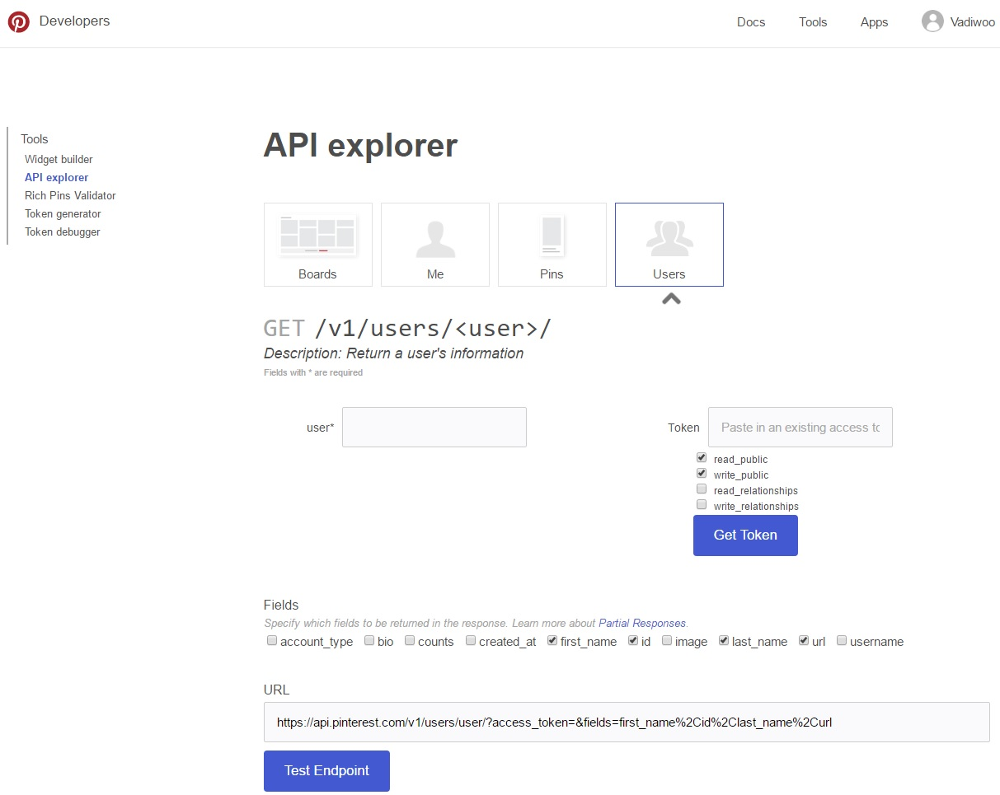

To work with Pinterest API, we need to create an Apps that is tied to our Pinterest account.
We can create an account by visiting Pinterest website at Pinterest.com
Creating Pinterest Apps can be done in three simple steps:-
Here is the link to create an app Create Apps is a link to a page on this website.
After succesfully creating the App, We will be provided with an App ID and App seceret.
With this App ID we can get access code. We can use the access code to get access token which we will be using to make API requests.
Pinterest API also allows us to generate a token to work with the API calls. We can generate token to work on by selecting specific method and parameters. 
Now we can make API calls with the access token.